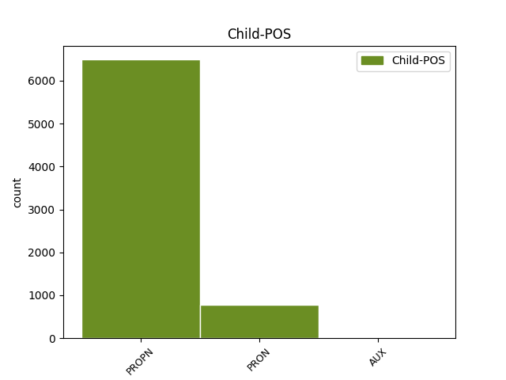

Distribution of features within this leaf

Agreement Rules sorted by frequency.
- When the dependent token is the modifer(mod) of the head token, and the dependent token is PROPN.
1 Был _ _ _ _ 0 _ _ _
2 ли _ _ _ _ 0 _ _ _
3 в _ _ _ _ 0 _ _ _
4 яви _ _ _ _ 0 _ _ _
5 или _ _ _ _ 0 _ _ _
6 только _ _ _ _ 0 _ _ _
7 приснился _ _ _ _ 0 _ _ _
8 мне _ _ _ _ 0 _ _ _
9 этот _ _ _ _ 0 _ _ _
10 странный _ _ _ _ 0 _ _ _
11 мальчик _ _ _ _ 0 _ _ _
12 , _ _ _ _ 0 _ _ _
13 овеянный _ _ _ _ 0 _ _ _
14 нежностью _ _ _ _ 0 _ _ _
15 и _ _ _ _ 0 _ _ _
16 печалью _ _ _ _ 0 _ _ _
17 нездешности _ _ _ _ 0 _ _ _
18 , _ _ _ _ 0 _ _ _
19 как _ _ _ _ 0 _ _ _
20 Маленький _ _ _ _ 0 _ _ _
21 принц принц NOUN _ Animacy=Anim|Case=Nom|Gender=Masc|Number=Sing 0 _ _ _
22 Антуана Антуан PROPN _ Animacy=Anim|Case=Gen|Gender=Masc|Number=Sing 21 mod _ _
23 де _ _ _ _ 0 _ _ _
24 Сент-Экзюпери _ _ _ _ 0 _ _ _
25 . _ _ _ _ 0 _ _ _
1 А _ _ _ _ 0 _ _ _
2 радость _ _ _ _ 0 _ _ _
3 его _ _ _ _ 0 _ _ _
4 была _ _ _ _ 0 _ _ _
5 предвидением предвидение NOUN _ Animacy=Anim|Case=Ins|Gender=Neut|Number=Sing 0 _ _ _
6 того то PRON _ Animacy=Inan|Case=Gen|Gender=Neut|Number=Sing 5 mod _ SpaceAfter=No
7 , _ _ _ _ 0 _ _ _
8 что _ _ _ _ 0 _ _ _
9 на _ _ _ _ 0 _ _ _
10 ее _ _ _ _ 0 _ _ _
11 плечи _ _ _ _ 0 _ _ _
12 без _ _ _ _ 0 _ _ _
13 боязни _ _ _ _ 0 _ _ _
14 можно _ _ _ _ 0 _ _ _
15 возложить _ _ _ _ 0 _ _ _
16 бремя _ _ _ _ 0 _ _ _
17 семейной _ _ _ _ 0 _ _ _
18 жизни _ _ _ _ 0 _ _ _
19 и _ _ _ _ 0 _ _ _
20 собственной _ _ _ _ 0 _ _ _
21 слабости _ _ _ _ 0 _ _ _
22 . _ _ _ _ 0 _ _ _
1 В _ _ _ _ 0 _ _ _
2 этом _ _ _ _ 0 _ _ _
3 послании _ _ _ _ 0 _ _ _
4 , _ _ _ _ 0 _ _ _
5 в _ _ _ _ 0 _ _ _
6 частности _ _ _ _ 0 _ _ _
7 , _ _ _ _ 0 _ _ _
8 говорилось _ _ _ _ 0 _ _ _
9 : _ _ _ _ 0 _ _ _
10 " _ _ _ _ 0 _ _ _
11 Хотя _ _ _ _ 0 _ _ _
12 церковь _ _ _ _ 0 _ _ _
13 Руси _ _ _ _ 0 _ _ _
14 уже _ _ _ _ 0 _ _ _
15 давно _ _ _ _ 0 _ _ _
16 отделена отделить VERB _ Aspect=Perf|Gender=Fem|Number=Sing|Tense=Past|Variant=Short|VerbForm=Part|Voice=Pass 0 _ _ _
17 от _ _ _ _ 0 _ _ _
18 лона _ _ _ _ 0 _ _ _
19 своей _ _ _ _ 0 _ _ _
20 матери _ _ _ _ 0 _ _ _
21 - _ _ _ _ 0 _ _ _
22 римской _ _ _ _ 0 _ _ _
23 церкви _ _ _ _ 0 _ _ _
24 ( _ _ _ _ 0 _ _ _
25 как _ _ _ _ 0 _ _ _
26 будто _ _ _ _ 0 _ _ _
27 бы _ _ _ _ 0 _ _ _
28 действительно _ _ _ _ 0 _ _ _
29 когда-то _ _ _ _ 0 _ _ _
30 Русь _ _ _ _ 0 _ _ _
31 была быть AUX _ Aspect=Imp|Gender=Fem|Mood=Ind|Number=Sing|Tense=Past|VerbForm=Fin|Voice=Act 16 mod _ _
32 в _ _ _ _ 0 _ _ _
33 лоне _ _ _ _ 0 _ _ _
34 Рима _ _ _ _ 0 _ _ _
35 ! _ _ _ _ 0 _ _ _
36 ) _ _ _ _ 0 _ _ _
37 , _ _ _ _ 0 _ _ _
38 папа _ _ _ _ 0 _ _ _
39 не _ _ _ _ 0 _ _ _
40 может _ _ _ _ 0 _ _ _
41 сдержать _ _ _ _ 0 _ _ _
42 в _ _ _ _ 0 _ _ _
43 себе _ _ _ _ 0 _ _ _
44 отцовских _ _ _ _ 0 _ _ _
45 чувств _ _ _ _ 0 _ _ _
46 к _ _ _ _ 0 _ _ _
47 православной _ _ _ _ 0 _ _ _
48 Руси _ _ _ _ 0 _ _ _
49 и _ _ _ _ 0 _ _ _
50 зовет _ _ _ _ 0 _ _ _
51 ее _ _ _ _ 0 _ _ _
52 к _ _ _ _ 0 _ _ _
53 себе _ _ _ _ 0 _ _ _
54 " _ _ _ _ 0 _ _ _
55 . _ _ _ _ 0 _ _ _
Disagree Examples:
1 Однако _ _ _ _ 0 _ _ _
2 стиль _ _ _ _ 0 _ _ _
3 работы работа NOUN _ Animacy=Inan|Case=Gen|Gender=Fem|Number=Sing 0 _ _ _
4 Семена Семен PROPN _ Animacy=Anim|Case=Gen|Gender=Masc|Number=Sing 3 mod _ _
5 Еремеевича _ _ _ _ 0 _ _ _
6 заключался _ _ _ _ 0 _ _ _
7 в _ _ _ _ 0 _ _ _
8 том _ _ _ _ 0 _ _ _
9 , _ _ _ _ 0 _ _ _
10 чтобы _ _ _ _ 0 _ _ _
11 принимать _ _ _ _ 0 _ _ _
12 всех _ _ _ _ 0 _ _ _
13 желающих _ _ _ _ 0 _ _ _
14 и _ _ _ _ 0 _ _ _
15 лично _ _ _ _ 0 _ _ _
16 вникать _ _ _ _ 0 _ _ _
17 в _ _ _ _ 0 _ _ _
18 дело _ _ _ _ 0 _ _ _
19 . _ _ _ _ 0 _ _ _
1 - _ _ _ _ 0 _ _ _
2 Я _ _ _ _ 0 _ _ _
3 была _ _ _ _ 0 _ _ _
4 у _ _ _ _ 0 _ _ _
5 вас _ _ _ _ 0 _ _ _
6 неделю неделя NOUN _ Animacy=Inan|Case=Acc|Gender=Fem|Number=Sing 0 _ _ _
7 тому то PRON _ Animacy=Inan|Case=Dat|Gender=Neut|Number=Sing 6 mod _ _
8 назад _ _ _ _ 0 _ _ _
9 по _ _ _ _ 0 _ _ _
10 вопросу _ _ _ _ 0 _ _ _
11 устройства _ _ _ _ 0 _ _ _
12 на _ _ _ _ 0 _ _ _
13 работу _ _ _ _ 0 _ _ _
14 . _ _ _ _ 0 _ _ _
1 Документы документ NOUN _ Animacy=Inan|Case=Nom|Gender=Masc|Number=Plur 0 _ _ _
2 Ефимовой Ефимова PROPN _ Animacy=Anim|Case=Gen|Gender=Fem|Number=Sing 1 mod _ _
3 действительно _ _ _ _ 0 _ _ _
4 находились _ _ _ _ 0 _ _ _
5 у _ _ _ _ 0 _ _ _
6 него _ _ _ _ 0 _ _ _
7 . _ _ _ _ 0 _ _ _
1 За _ _ _ _ 0 _ _ _
2 неделю _ _ _ _ 0 _ _ _
3 начальник _ _ _ _ 0 _ _ _
4 управления _ _ _ _ 0 _ _ _
5 собирался _ _ _ _ 0 _ _ _
6 позвонить _ _ _ _ 0 _ _ _
7 Савельеву _ _ _ _ 0 _ _ _
8 , _ _ _ _ 0 _ _ _
9 который _ _ _ _ 0 _ _ _
10 занимал _ _ _ _ 0 _ _ _
11 теперь _ _ _ _ 0 _ _ _
12 такой _ _ _ _ 0 _ _ _
13 же _ _ _ _ 0 _ _ _
14 пост _ _ _ _ 0 _ _ _
15 , _ _ _ _ 0 _ _ _
16 как _ _ _ _ 0 _ _ _
17 и _ _ _ _ 0 _ _ _
18 Семен _ _ _ _ 0 _ _ _
19 Еремеевич _ _ _ _ 0 _ _ _
20 в _ _ _ _ 0 _ _ _
21 соседней _ _ _ _ 0 _ _ _
22 области _ _ _ _ 0 _ _ _
23 , _ _ _ _ 0 _ _ _
24 и _ _ _ _ 0 _ _ _
25 узнать _ _ _ _ 0 _ _ _
26 о _ _ _ _ 0 _ _ _
27 деловых _ _ _ _ 0 _ _ _
28 качествах качество NOUN _ Animacy=Inan|Case=Loc|Gender=Neut|Number=Plur 0 _ _ _
29 Ефимовой Ефимова PROPN _ Animacy=Anim|Case=Gen|Gender=Fem|Number=Sing 28 mod _ SpaceAfter=No
30 . _ _ _ _ 0 _ _ _
1 Формально _ _ _ _ 0 _ _ _
2 , _ _ _ _ 0 _ _ _
3 конечно _ _ _ _ 0 _ _ _
4 , _ _ _ _ 0 _ _ _
5 для _ _ _ _ 0 _ _ _
6 зачисления зачисление NOUN _ Animacy=Inan|Case=Gen|Gender=Neut|Number=Sing 0 _ _ _
7 Ефимовой Ефимова PROPN _ Animacy=Anim|Case=Gen|Gender=Fem|Number=Sing 6 mod _ _
8 не _ _ _ _ 0 _ _ _
9 было _ _ _ _ 0 _ _ _
10 препятствий _ _ _ _ 0 _ _ _
11 , _ _ _ _ 0 _ _ _
12 но _ _ _ _ 0 _ _ _
13 если _ _ _ _ 0 _ _ _
14 взглянуть _ _ _ _ 0 _ _ _
15 на _ _ _ _ 0 _ _ _
16 вопрос _ _ _ _ 0 _ _ _
17 поглубже _ _ _ _ 0 _ _ _
18 - _ _ _ _ 0 _ _ _
19 анкета _ _ _ _ 0 _ _ _
20 все-таки _ _ _ _ 0 _ _ _
21 не _ _ _ _ 0 _ _ _
22 чистая _ _ _ _ 0 _ _ _
23 . _ _ _ _ 0 _ _ _